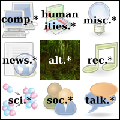
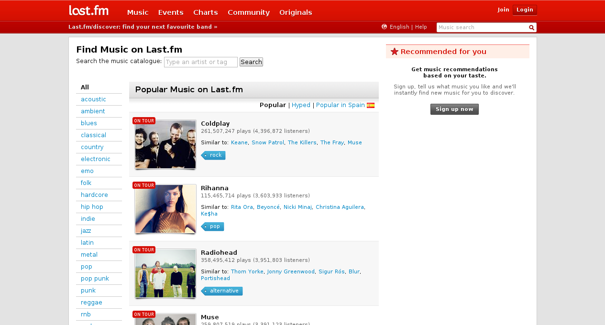
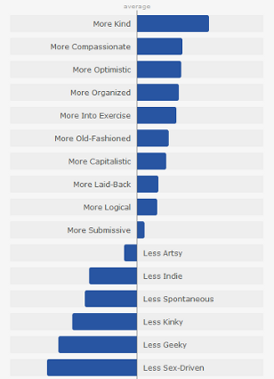

The Influence of ICT on Social Relations
Informática y Sociedad
18.12.2012
———
André Röhrig
Table of Contents
- Telegraph Networks
- Usenet
- The 90s
- Specialized Social Networks
- Love
The Victorian Internet:
Global Telegraph Networks

- instant massaging
- proto-memes
- early "Hacking" aka money transfer fraud
- very limited availability
The First Email
- using ARPANET in 1971
- Ray Tomlinson was the pioneer
Sending electronic mail over the ARPANET for commercial profit or political purposes is both anti-social and illegal. By sending such messages, you can offend many people, and it is possible to get MIT in serious trouble with the Government agencies which manage the ARPANET.
Usenet
- connected to ARPANET in 1980, today insignificant
- different "part" of the internet: NOT worldwideweb
- similar in use to forums
- established many customs still known today in forums, blogs and social networks
The 1990s
The 1990s
- mainstream use of the internet
- chatrooms, instant messaging
- services to build primitive websites
- after the DotCom-Bubble burst investors became sceptic of the social web
Specialized Social Networks
- "Web 2.0"
- user generated content
A social network for pictures:
A social network for music:
Well, and then there was this:
(they called it MySpace)
- in the beginning: a combination of successful ideas pioneered by others
- chat, pictures, personal website("wall"),…
- exceptional influence on social conventions
- 1 billion active users
- company value: $58 billion

- radical simplification of everything social networks were known for
- the idea: Realtime
- "to tweet" has been adopted all around the world
- 500 million active users
Perspective: Love in the Digital Age
Reification
- the vivid process of being in love becomes a "thing"
Identity
- social networks make it impossible be someone else, to be "more" than yourself